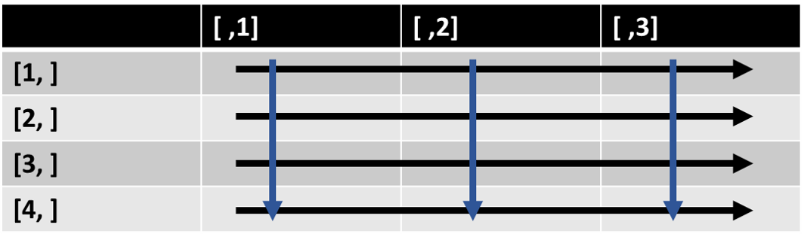

Data types (objects) in R
The R language has multiple classes of data types often referred to as objects, though R is not an object oriented programming language per se. Those include but not limited to vectors, lists, matrices, and data.frames. Each of these is optimized to handle either single or multidimensional information and is part of what makes R such a powerful tool in handling, analyzing, and representing data. This part will go over the commonly used data types in R.
“Atomic” vectors
Atomic vectors are probably the most basic form of data class in R. Similar to lists in python, they contain a sequence of elements. In fact, the output from all the functions used in this tutorial so far were vectors with one element. That is the reason [1] was displayed next to the output, to denote the first element in the vector. In R, each atomic vector class is capable of only storing information of the same type. There are four main classes of atomic vectors in R, this part will detail them and how to work with them.
Numeric vectors (double and integer)
Numeric vectors store elements that are numbers, R has two common classes of numeric vectors: doubles (double precision folating point numbers) and integers.
Let’s make some:
> dbl <- 1.5
> dbl[1] 1.5> int <- 1L
> int[1] 1Ok, that was cheating. What if you actually want to create a vector with multiple elements?
The easiest way to do that (or any other type of atomic vector) is using the function c() which you have already
encountered.
> #double
> dub.vec <- c(1,2,3)
>
> #integer
> int.vec <- c(1L,2L,3L)
>
> #alt way to get an interger sequence, : tells R to get all natural numbers between 1 and 3
>
> int.vec2 <- (1:3)
>
>
> dub.vec[1] 1 2 3> int.vec[1] 1 2 3> int.vec2[1] 1 2 3> #Note this is one way of comparing variables in R
> dub.vec == int.vec[1] TRUE TRUE TRUEThe snippet above uses natural numbers, the output of the two
vectors is pretty much identical (as demonstrated by the is.equal operator ==). Furthermore, as will be detailed
later, regardless of the type of numbers used, R will automatically convert classes of numeric vectors when needed.
However, sometimes it might behoove you know whether a vector contains floats or integers. The RStudio global
environment pane will denote if a vector is a number or integer, however a more R way to do it is to use the function
typeof().
> typeof(dub.vec)[1] "double"> typeof(int.vec)[1] "integer"Working with numerical vectors is straightforward, R allows you to perform mathematical operations on them, sum them and even concatenate them. When concatenating an integer and double to a single vector R will coarse it to double. This is because coercing a float to integer will result in dropping the float (i.e. 4.99 will be coerced to 4 you can try it using as.integer(4.99) ). Therefore coercing to double is less restrictive.
> #concatenating vactors plus a bonus example of nesting functions.
> #note that you can use the assign operator within a function, that's one of the differences
> #between it and using "=" .
> typeof(num.vec <- c(dub.vec,int.vec))[1] "double"> num.vec[1] 1 2 3 1 2 3> #note how when performing a mathematical operation on a vector it is perfomed individually on all
> #the ellements of the vector, negating the need to use a for loop. Flanking the operation with () serves as a call for the newly created variable.
>
> (sq.num.vec <- num.vec^2)[1] 1 4 9 1 4 9Indexing and subseting numeric vectors
R makes it easy to index, access and subset every element of a numeric vector using the square brackets [. One
thing to note is that unlike other programming language (looking at you python), R starts indexing at 1 and not at 0.
In the example below, I used the function rnorm() to generate a vector of 100 random numbers normally distributed around
a mean of 45 (which would probably be this course’s average) and a standard deviation of 18.
Note that I didn’t list the arguments for rnorm(), if arguments are not specified R assumes your input is in the order
defaulted by the function you call.
> #Note how I didn't specify the arguments, R knows to match them
> #you just have to make sure you write them in the correct order.
> this.course.avarage <- round(rnorm(100, 45, 18),2)
>
> #We can see if our vector is indeed 100 elements long using the function length
>
> length(this.course.avarage)[1] 100> #Head lets you glimpse the first n elements in a variable, default is 6 (tail is for last)
> head(this.course.avarage)[1] 57.64 13.13 35.57 49.34 58.16 41.17OK, you made a vector now what?
As mentioned above, elements along the vector can be accessed (sometimes referred to as indexed) using the [].
Vectors are mutable meaning that accessing elements allows you to modify them.
The following code is an example of how.
> #let's access the first 10 elements in the vector.
> this.course.avarage[1:10] [1] 57.64 13.13 35.57 49.34 58.16 41.17 62.47 55.92 52.28 20.88> #You can also replace them with whatever it is you want.
> #Let's replace the first 10 elements with a copy of the last 10 elements.
>
> this.course.avarage[1:10] <- this.course.avarage[91:100]
>
> #Did it work?
>
> this.course.avarage[1:10] [1] 70.19 61.34 48.96 72.79 36.88 21.99 31.27 30.42 23.28 59.58> this.course.avarage[91:100] [1] 70.19 61.34 48.96 72.79 36.88 21.99 31.27 30.42 23.28 59.58> #Did we replace or just increased the size of the vector?
> length(this.course.avarage)[1] 100Let’s look at another example of indexing, were we subset a vector in reverse and modify using some conditions without resorting to conditional statements.
> #note that indexing and subseting works in reverse order too
> another.course.avarage <- c(this.course.avarage[1:5],this.course.avarage[25:20])
>
> #What would the length of this vector be?
>
> #Another great aspect of vectors is that they allow you to change only a subset values without resorting to conditional statements (if else)
>
> #Let's create a new vector
>
> another.course.avarage2 <- rnorm(n=100,mean=75,sd=5)
>
> #Let's access only marks higher than the avarage
> another.course.avarage2[another.course.avarage2>75] [1] 79.11019 77.01985 84.09941 79.85823 76.01662 77.51425 77.26020 83.59738
[9] 78.55468 77.36091 78.84164 77.45232 79.34773 79.74443 81.56185 78.65924
[17] 79.25197 76.27369 86.49679 75.54120 77.84813 81.46743 76.05149 75.89301
[25] 77.48752 77.89849 75.75378 79.55080 75.81562 82.54527 77.16002 75.05480
[33] 76.75418 77.53484 77.38109 75.27572 77.52100 75.90061 79.42424 75.09398
[41] 75.75721 75.10488 87.28087 75.97136 75.56457 80.15464 75.20334 79.06451
[49] 77.10130> #lets change anything equal to or grater than the 75 percentile to 100
> #this can be done using the quantile function and subseting the 3 element of the vector it produces which it the 75 percentile
> another.course.avarage2[another.course.avarage2 >= quantile(another.course.avarage2)[3]] <- 100
>
> another.course.avarage2[another.course.avarage2==100] [1] 100 100 100 100 100 100 100 100 100 100 100 100 100 100 100 100 100 100 100
[20] 100 100 100 100 100 100 100 100 100 100 100 100 100 100 100 100 100 100 100
[39] 100 100 100 100 100 100 100 100 100 100 100 100Quick note on reproducibility
Note that the numbers generated by the code snippet above will change every time you run it. This is due to the way random numbers (more accurately pseudorandom numbers) are generated by “random” number generating algorithms. If you want to make sure that your code is reproducible you need to set the seed that initializes the pseudorandom number generating algorithm rather than allowing it to be set randomly. You can do it by incorporating the function set.seed() before you generate numbers, you can use any integer between the brackets.
Quick R exercise - indexing and subseting:
Use the function seq to create a numeric vector of all the natural numbers between 1 and 10. If you are unsure of how to use seq, use the help function.
What type of a numeric vector is the vector you created?
Create another numeric vector of 10 random elements between 1 and 10 using the function runif()
What type of a numeric vector did it create?
Create a third vector by multiplying your first vector by the second vector
Call the new vector, what can you tell of the order of operations when multiplying vectors in R?
Replace the 7th element of the first vector, the 8th element of the second vector and the 1st element of the third vector.
Create a new vector with the final element being -8, the first element being the 7th element of the third vector, the second element being the 5th element of the first vector and the third element being the first element of the
Character vectors:
Character vectors only store elements that are characters. These could be letters,numbers, or characters. In order for any
of those to count as a character they needs to be flanked by double quotation mark (e.g "j").
> #Here is how you create a character vector
> char.vec <- c("a","abc","abcd")
>
> #Note the length of this vector is 4, the length of each string of characters doesn't impact the
> #length of the vector
>
> length(char.vec)[1] 3> #Character vectors can contain numbers too
> char.vec2 <- c("1","2","3")
> typeof(char.vec2)[1] "character"> #Tip, R can convert(coerce) this to a numeric vector
> #There is an as.x function for almost every data type in R
> #(e.g. as.numeric, as.double, as.character, etc.)
> char.vec2b <- as.numeric(char.vec2)
>
> #When concatenating a character and a numeric vector, R will coerce the numeric vector to character.
> char.vec3 <- c(char.vec2,int.vec)
> typeof(char.vec3)[1] "character"> #alternatively you can use the class, class will not differentiate
> #between the different numeric vectors but will between the different types of vectors
> class(char.vec3)[1] "character"> #If you need to generate a sequence of letters from a-z
> char.vec4 <- letters[1:7]Indexing character vectors is done similarly to numeric vectors.
> char.vec[1][1] "a"> #replacing the first element
> char.vec[1] <- "aa"
>
> char.vec[1][1] "aa"> #adding a fourth element
> char.vec[4] <- "Fourth"
>
> char.vec[4][1] "Fourth"> #To count the number of characters in each of the strings you can use the function nchar
> nchar(char.vec)[1] 2 3 4 6> #just like with numerical vectors it is possible to subset by value
> char.vec[char.vec=="a"]character(0)> #or replace a value
> char.vec[char.vec=="a"] <- "a2"Quick R exercise - character vectors:
Use R to calculate the total number of character in char.vec (avoid hard coding)
Use indexing to change the 4th character in the string occupying the 4th element in the vector char.vec with the letter “B”, no hard coding. Did it work?
A note on working with strings in R
As you notice in the exercise, indexing a character vector is not the same as indexing the strings that make each element of the vector. This does not mean that strings are immutable, R has a lot of tools in its arsenal geared towards manipulating strings. While the future labs will deal with handling biological strings, this is a good opportunity to look at how R handles strings in general. Base R has functions such as grep, substring and gsup that work the same way grep in bash works, however, I find the stringr package much more useful and intuitive. You can download a cheatsheet guide to stringer here
Lets look at an example for the capabilities of stringer
> #load the package you can install it from the cran repo with install.packages
> library(stringr)
> borring <- "It was the best of times it was the worst of time"
>
> #count the number of characters
> str_count(borring)[1] 49> #split the string in boring to several elements after every space
> #the indexing here is for a list, we will discuss lists later in this lab
>
> borring2 <- str_split(borring, " ")[[1]] #note how white space is referred to
>
> #replace a part of a string, lets correct the typo at the end of the sentence to times
>
> borring <- str_replace(borring, "time$", "times") #$ is a regular expression that matches the end of the string, otherwise it would just replace the first time occurrence
> borring[1] "It was the best of times it was the worst of times"> #How many times does the word it appear in the string?
> #Note that R is case sensitive, (?i) searches in a case insensitive way (another regular expression)
>
> str_count(borring, "(?i)it")[1] 2Quick R exercise - strings:
Now lets do something a bit biological Download the stringr cheatsheet and run the following code that will generate a string of 100 nucleotides.
> #four bases
> bases <- c("A","T","G","C")
>
> #note seting seeds
> set.seed(12)
>
> #Using sample let's generate a random sequence of 10000 nucleotieds, slightly larger than the avarage genome size of RNA viruses.
> dna <- paste(sample(bases,10000, replace = T), collapse = "")- Use stringr to calculate the %GC of this string
- Use stringr to find out how many times do the codons ATG and TAG appear in the string?
Logical vectors
Logical vectors (or Boolean vectors) contain binary elements, i.e. true or false or 1 and 0. They are the result of logical operators that compare variables. Due to their binary nature, R treats them like numeric vectors (double to be exact). Logical vectors can be indexed as any other vector. The example snippet bellow shows the result of a logical operator on the vector this.class.average. The operator will evaluate each element of the vector and determine whether this element is larger than 55. If the element is larger than the result will be TRUE and if it is not the result will be false.
> log.vec <- this.course.avarage > 55
> log.vec [1] TRUE TRUE FALSE TRUE FALSE FALSE FALSE FALSE FALSE TRUE TRUE FALSE
[13] FALSE TRUE FALSE FALSE FALSE FALSE FALSE FALSE FALSE TRUE TRUE FALSE
[25] FALSE TRUE FALSE FALSE TRUE FALSE FALSE FALSE FALSE FALSE TRUE FALSE
[37] TRUE FALSE TRUE FALSE FALSE FALSE FALSE FALSE FALSE FALSE FALSE FALSE
[49] FALSE FALSE FALSE FALSE TRUE FALSE FALSE FALSE FALSE FALSE FALSE FALSE
[61] FALSE FALSE FALSE TRUE FALSE FALSE FALSE TRUE FALSE FALSE FALSE FALSE
[73] FALSE FALSE FALSE TRUE TRUE TRUE FALSE TRUE TRUE FALSE FALSE FALSE
[85] TRUE FALSE TRUE FALSE FALSE TRUE TRUE TRUE FALSE TRUE FALSE FALSE
[97] FALSE FALSE FALSE TRUEYou can use logical vectors to index and subset types of vectors using the which function.
> #The which function tells you the position of elements fulfill a condition (give an answer of TRUE)
> head(which(this.course.avarage > 50))[1] 1 2 4 10 11 14> #Can use it to subset only the elements that do
> #Here, asking R to subset only the elements larger than 50
> passed.the.course <- this.course.avarage[which(this.course.avarage > 50)]
>
> length(passed.the.course)[1] 35> #of course you can also use the subset function do achieve the same results
>
> passed.the.course2 <- subset(this.course.avarage, this.course.avarage >50)
> length(passed.the.course2)[1] 35> #Lets compare the two vectors using a logical operator, the result of this will be a logical vector
> passed.the.course == passed.the.course2 [1] TRUE TRUE TRUE TRUE TRUE TRUE TRUE TRUE TRUE TRUE TRUE TRUE TRUE TRUE TRUE
[16] TRUE TRUE TRUE TRUE TRUE TRUE TRUE TRUE TRUE TRUE TRUE TRUE TRUE TRUE TRUE
[31] TRUE TRUE TRUE TRUE TRUE> #alternatively you can ask R which positions between the two vectors are not the same
> which(passed.the.course != passed.the.course2)integer(0)Checking and coercing
Before we continue with data types in R, lets have a look at how we can tell which is which and how do we convert (coerce) variable from one data type to another.
The class function
The class() function lets you know what class of data type does a particular variable belong to.
It is useful since some packages (especially those from bioconductor) import data as variables containing more than
one type of objects.
> class(dna)[1] "character"The is.x function family
The is.x function family is another option to query for the type of a variable. The output of any of these functions is a logical vector with the length of 1.
> #is a variable an atomic vector?
> is.atomic(passed.the.course)[1] TRUE> #Note logical vectors are also numeric
> is.numeric(passed.the.course)[1] TRUE> is.character(passed.the.course)[1] FALSE> is.logical(passed.the.course)[1] FALSE> typeof(passed.the.course)[1] "double"The as.x function family
R variables can be coerced to another data type, depending of restriction. This can be done using an as.x function. There is an as.x for every data type in R. Here are some examples
> numbers <- seq(1,100, by = 5)
> typeof(numbers)[1] "double"> class(numbers)[1] "numeric"> numbers <- as.character(numbers)
> class(numbers)[1] "character"> #lets see what happens when a character vector is coersed to numeric
> lets <- letters[1:5]Quick R exercise - checking and coercing
1.Try coercing numbers back to a numeric vector and than use the sum function to sum it, is it possible?
Create a logical vector of 6 elements and coerce it to an integer vector, what happens
Create sequence of 10 numbers from 3.5-4.5, coerce the double vector to an integer, what happened?
What is the difference between is.numeric and is.integer?
Factors - vectors’ evil cousins
Factors are special case of integer vectors containing only predefined values. Factors are comprised of to value sets, the elements of the vector and the levels. Levels are the defined set of values (or categories) allowed in the vector. While factors are useful for certain type of tasks, e.g. when you know exactly what value categories are expected in a data-set, often times this is not the case. When working with R, factors are actually pretty common since most of BaseR data importation functions coerce vectors into factors, therefore it is worth while to dedicated a few minute to familiarize yourself with them.
The snippet bellow includes a data-set of the quality of each season of game of thrones. There are three possible values
> #Let's create a character vector with 8 elements
>
> b <- c(rep("Terrible",7), "Thank god that series is over")
>
> #Coerce it into a factor
> seasons_of_GoT <- factor(b, levels = c("Terrible", "Thank god that series is over", "Great"))
>
> seasons_of_GoT[1] Terrible Terrible
[3] Terrible Terrible
[5] Terrible Terrible
[7] Terrible Thank god that series is over
Levels: Terrible Thank god that series is over Great> typeof(seasons_of_GoT)[1] "integer"> class(seasons_of_GoT)[1] "factor"> #To edit the levels of a factor use the level function, e.g. great is not a real option for a GoT season
>
> levels(seasons_of_GoT) <- c("Terrible", "Thank god that series is over", "Extra terrible")It is worth noting the while factors are integers the values they contain are treated as characters. When coercing a factor back to an atomic vector, it is necessary to coerce it first to a character. Otherwise the vector will contain the number of available levels rather than the elements of the factor.
> a <- seq(5, 15, by = 1)
>
> a2 <- factor(a, levels = seq(5, 19, by = 1))
>
> typeof(a)[1] "double"> typeof(a2)[1] "integer"> sum(a2)Error in Summary.factor(structure(1:11, .Label = c("5", "6", "7", "8", : 'sum' not meaningful for factors> sum(a)[1] 110> #to coerce the factor to a numeric vector you have to pass through as.character otherwise it will use the number of levels.
>
> a3 <- as.numeric(a2)
> a4 <- as.numeric(as.character(a2))
>
> #level 1-11
> head(a3,4)[1] 1 2 3 4> #elements 1-11
> head(a4,4)[1] 5 6 7 8> a==a4 [1] TRUE TRUE TRUE TRUE TRUE TRUE TRUE TRUE TRUE TRUE TRUEMatrices
Matrices are two dimensional vectors, which is a fancy way of saying that a matrix is a tabulated vector. Because a matrix is essentially a linear vector folded into a table, matrices only contain elements of the same data type (e.g. only integer, only characters, etc).
The code snippet bellow uses the function dim to change the dimensions of the vector.
> mat <- seq(3.5, 4.6, by = 0.1)
>
> dim(mat)NULL> #Coerce the vector into a matrix by changing its dimensions (i.e. adding columns and rows)
> #When changing dimensions the order is rows,columns (here 4 rows, 3 columns)
> dim(mat) <- c(4,3)
>
> mat [,1] [,2] [,3]
[1,] 3.5 3.9 4.3
[2,] 3.6 4.0 4.4
[3,] 3.7 4.1 4.5
[4,] 3.8 4.2 4.6Note how the vector is folded into a two dimensional vector from top to bottom in each column. This essentially converts each column and each row to a vector.

(#fig:mi )R matrix, each row and each column are vectors
We can also use the class and is.x function to inspect the column and the matrix as a whole and see that it is indeed both a vector and made of vectors.
> class(mat)[1] "matrix" "array" > class(mat[1,])[1] "numeric"> class(mat[,1])[1] "numeric"> is.numeric(mat)[1] TRUE> is.atomic(mat)[1] TRUE> is.atomic(mat[1,])[1] TRUEQuick R exercise - matrices 1
There are several R functions that can be used to generate a matrix.
Create a numeric vector of 10 elements, use the matrix function to convert is to a matrix with 5 rows and two columns, what happens when the argument
byrowis set to TRUE?Create a character vector of 10 element use the function
cbind()to bind it with the vector from the previous question. Are the vectors columns or rows? What happens when you use the functionrbind()?Use the
typeof()function on one of the matrices from question 2, what type of data does this matrix contain, what does it tell you about the coercion of data type within a matrix?
Working with matrices
A matrix is basically a vector with two dimensions when a matrix is indexed like a vector, i.e.
using [. By default, when a matrix is indexed using [ R will return the value found on the
nth position of the original vector (see snippet bellow).
One of R strength is that it allows to also index and access any combination of columns and rows,
not just individual elements. This is done similar to accessing a vector only the positions of the
rows and columns are separated by a comma, i.e. matrix[row,column]. This form of indexing allows to
subset specific rows and columns from the matrix,the following snippet demonstrates how.
> #Mat[5] will output the element occupying the fifth position of the vector used to construct the
> #matrix i.e. 3.9
> mat[5][1] 3.9> #Mat[,1] will output the first column of the matrix
> mat[,1][1] 3.5 3.6 3.7 3.8> #mat[,2:3] will output the 2nd and 3rd columns of the matrix
>
> mat[,2:3] [,1] [,2]
[1,] 3.9 4.3
[2,] 4.0 4.4
[3,] 4.1 4.5
[4,] 4.2 4.6> #mat[1,] will output the first row of the matrix
> mat[1,][1] 3.5 3.9 4.3> #mat[1:2,] will output the first 2 rows of the matrix
> mat[1:2,] [,1] [,2] [,3]
[1,] 3.5 3.9 4.3
[2,] 3.6 4.0 4.4> #mat[1:2,1:2] will subset the first two rows and columns of the matrix
> mat[1:2,1:2] [,1] [,2]
[1,] 3.5 3.9
[2,] 3.6 4.0It is possible to name the rows and columns of a matrix, once named the names can be used to index and subset the matrix.
The code snippet bellow shows how to achieve this using the colnames() and rownames() functions.
> #The rows and columns of a matrix can be named, so that the vectors have meaningful names.
> #This is done using the functions colnames and rownames
>
> stud_mrks <- mat
> rn <- c("Class1","Class2","Class3","Class4")
> cn <- c("Student1","Student2","Student3")
> rownames(stud_mrks) <- rn
> colnames(stud_mrks) <- cn
>
> stud_mrks Student1 Student2 Student3
Class1 3.5 3.9 4.3
Class2 3.6 4.0 4.4
Class3 3.7 4.1 4.5
Class4 3.8 4.2 4.6> #The names can be used to index the matrix, note the use of comma.
> stud_mrks["Class1",]Student1 Student2 Student3
3.5 3.9 4.3 > stud_mrks[,"Student1"]Class1 Class2 Class3 Class4
3.5 3.6 3.7 3.8 Quick R exercise - matrices 2
Assign the matrix mat to the variable mat_bs and replace the first row of mat_bs with A,B,C
Replace the 4th element in the matrix mat_bs with 1000
Assign the 3rd column of the matrix mat_bs the the vector v_bs
Use the function t to transform the matrix mat_bs, how many rows does it have now?
One of R’s greatest strength is the ability to perform tasks on a matrix as a whole, negating the need to use a loop every time an operation is needed to be done on several columns.
> #Let's generate a new matrix, this time with matrix function
> #byrow, fill the matrix by rows
> mat2 <- matrix(sample(1:1000,100,replace=F),nrow = 10,ncol = 10,byrow = T)
> head(mat2) [,1] [,2] [,3] [,4] [,5] [,6] [,7] [,8] [,9] [,10]
[1,] 859 449 110 675 232 893 619 974 271 630
[2,] 531 621 753 366 157 866 135 705 21 769
[3,] 886 990 98 823 586 411 150 783 776 382
[4,] 937 652 540 327 239 741 951 46 681 842
[5,] 903 670 947 446 785 661 53 646 12 113
[6,] 25 538 433 763 227 622 71 173 521 762> #When handling data, there is sometimes a need to transform it.
> #Log transformation is a common one. R's handling of matrices allows to do it without resorting to a for loop.
> #Note that I am copying the matrix because I still want to use the original
> mat2_log <- log10(mat2)
> head(mat2_log) [,1] [,2] [,3] [,4] [,5] [,6] [,7] [,8]
[1,] 2.933993 2.652246 2.041393 2.829304 2.365488 2.950851 2.791691 2.988559
[2,] 2.725095 2.793092 2.876795 2.563481 2.195900 2.937518 2.130334 2.848189
[3,] 2.947434 2.995635 1.991226 2.915400 2.767898 2.613842 2.176091 2.893762
[4,] 2.971740 2.814248 2.732394 2.514548 2.378398 2.869818 2.978181 1.662758
[5,] 2.955688 2.826075 2.976350 2.649335 2.894870 2.820201 1.724276 2.810233
[6,] 1.397940 2.730782 2.636488 2.882525 2.356026 2.793790 1.851258 2.238046
[,9] [,10]
[1,] 2.432969 2.799341
[2,] 1.322219 2.885926
[3,] 2.889862 2.582063
[4,] 2.833147 2.925312
[5,] 1.079181 2.053078
[6,] 2.716838 2.881955> #Another common transformation is to calculate the proportion of value in the column or raw (often referred to as normalizing the data). R makes it easy to normalize matrices by rows or columns.
> #All that's needed to do is to divide the matrix by the sum of its columns or rows
>
> mat2_freq_row <- mat2/rowSums(mat2)
> head(mat2_freq_row) [,1] [,2] [,3] [,4] [,5] [,6]
[1,] 0.150385154 0.07860644 0.01925770 0.11817227 0.04061625 0.15633754
[2,] 0.107839155 0.12611698 0.15292445 0.07432981 0.03188465 0.17587327
[3,] 0.150552251 0.16822430 0.01665251 0.13984707 0.09957519 0.06983857
[4,] 0.157320349 0.10946944 0.09066488 0.05490262 0.04012760 0.12441236
[5,] 0.172459893 0.12796028 0.18086325 0.08517953 0.14992361 0.12624141
[6,] 0.006045949 0.13010883 0.10471584 0.18452237 0.05489722 0.15042322
[,7] [,8] [,9] [,10]
[1,] 0.10836835 0.170518207 0.047443978 0.11029412
[2,] 0.02741673 0.143176279 0.004264825 0.15617384
[3,] 0.02548853 0.133050127 0.131860663 0.06491079
[4,] 0.15967092 0.007723304 0.114338482 0.14137005
[5,] 0.01012223 0.123376623 0.002291826 0.02158136
[6,] 0.01717050 0.041837969 0.125997582 0.18428053> #rowSums should be 1
> rowSums(mat2_freq_row) [1] 1 1 1 1 1 1 1 1 1 1> #When normalizing by column it is impossible to just use the "/" operator, due to the way R stores matrices. Need to use the sweep function. This is not an issue when normalizing by rows.
> #use ?sweep to see which each of the arguments means.
>
> mat2_freq_columns <- sweep(mat2,2,colSums(mat2),"/")
> head(mat2_freq_columns) [,1] [,2] [,3] [,4] [,5] [,6]
[1,] 0.141492341 0.07405575 0.01941405 0.12525515 0.04458109 0.11777895
[2,] 0.087464998 0.10242454 0.13289799 0.06791613 0.03016910 0.11421788
[3,] 0.145939713 0.16328550 0.01729615 0.15271850 0.11260569 0.05420733
[4,] 0.154340306 0.10753752 0.09530533 0.06067916 0.04592621 0.09773147
[5,] 0.148739911 0.11050635 0.16713731 0.08276118 0.15084550 0.08718016
[6,] 0.004117938 0.08873495 0.07642076 0.14158471 0.04362029 0.08203640
[,7] [,8] [,9] [,10]
[1,] 0.16027965 0.204407135 0.057684121 0.10607846
[2,] 0.03495598 0.147953830 0.004469987 0.12948308
[3,] 0.03883998 0.164323190 0.165176671 0.06432059
[4,] 0.24624547 0.009653725 0.144955300 0.14177471
[5,] 0.01372346 0.135571878 0.002554278 0.01902677
[6,] 0.01838426 0.036306401 0.110898255 0.12830443> #If everything worked out the sum of each column should be 1 now
> colSums(mat2_freq_columns) [1] 1 1 1 1 1 1 1 1 1 1> #Just like vectors it is also possible to preform mathematical operations on two matrices
> mat2_mlt <- mat2_freq_columns*mat2_log
> head(mat2_mlt) [,1] [,2] [,3] [,4] [,5] [,6] [,7]
[1,] 0.41513756 0.1964141 0.03963170 0.3543849 0.10545604 0.3475482 0.44745119
[2,] 0.23835039 0.2860811 0.38232026 0.1741017 0.06624832 0.3355171 0.07446791
[3,] 0.43014763 0.4891438 0.03444055 0.4452355 0.31168102 0.1416894 0.08451934
[4,] 0.45865920 0.3026372 0.26041169 0.1525806 0.10923080 0.2804716 0.73336346
[5,] 0.43962873 0.3122992 0.49745913 0.2192621 0.43667807 0.2458656 0.02366303
[6,] 0.00575663 0.2423158 0.20148240 0.4081214 0.10277054 0.2291925 0.03403401
[,8] [,9] [,10]
[1,] 0.61088278 0.140343695 0.29694975
[2,] 0.42140049 0.005910303 0.37367863
[3,] 0.47551216 0.477337739 0.16607985
[4,] 0.01605181 0.410679690 0.41473527
[5,] 0.38098850 0.002756529 0.03906346
[6,] 0.08125540 0.301292561 0.36976759Because matrices are tables but behave like vectors, operating on them is memory efficient and many R packages use them as a preferred object.
Lists
A list is a multidimensional vector, which is a fancy way of saying that a list is a vector that can house any R object as an element (e.g. other vectors, matrices and even other lists). The elements of a list are independent of each other, making it a great container to store the output of functions that handle data. For example, some functions from the stringer package output their result as lists, especially those with _all suffix.
The code snippet bellow demonstrate how to create lists, as always there is more than one way to obtain your goal.
> #creating an empty list of 10 elements
> #Because a list is basically a vector of elements, it is possible to creat it using the vector function
> list1 <- vector(mode = "list", length = 10)
> class(list1)[1] "list"> is.vector(list1)[1] TRUE> is.atomic(list1) #why is it not atomic?[1] FALSE> head(list1,3)[[1]]
NULL
[[2]]
NULL
[[3]]
NULL> #Creating a list by using the list function
> list2 <- list(matrix(sample(10:1000,100,replace = F),ncol = 2),
+ cbind(seq(1,100,by=2),rep(10,50)),c("Category1","Category2"),list1,
+ factor(c("Cat","Dog","Cat","Mouse")) )Working with lists
The previous snippet demonstrated that lists can store any type of R object, even other lists. As mentioned, the elements of a list are independent of each other and in order to modify them they need to be accessed individually. Since lists are vectors, each element can be inspected, like one would inspect a vector.
> #Inspecting the 3rd element of list2
> list2[3][[1]]
[1] "Category1" "Category2"However, indexing a list like a vector does not allow you to modify the element
> #Note how the head function is unable to truncate the element to its first 2 components
> head(list2[5],2)[[1]]
[1] Cat Dog Cat Mouse
Levels: Cat Dog Mouse> #Note how indexing like a vector does not allow you to subset the element itself
> list2[5][1][[1]]
[1] Cat Dog Cat Mouse
Levels: Cat Dog MouseIn case you noticed, when using the head() function on a list each element is surrounded by double
square brackets ( [[ ). When subseting a list with [, it will always return another list. Think of it elements one on a
character vector where each element is a string. You can see each string even replace them but can’t modify them. In order
to access and modify an element of the list [[ have to be used.
> #Subseting the last element of list2 and assigning it to the first element of list1
> list1[[1]] <- list2[[5]][1:3]
> list1[1][[1]]
[1] Cat Dog Cat
Levels: Cat Dog MouseLists and the $ operator
$ is an operator that can be thought of as the equivalent of [[ ]], therefore it can be used to access elements of a list. However, in order to use it the elements must be named first.
> #Are the elements of list2 named?
> names(list2)NULL> #Naming the elements of the list
> names(list2) <- c("Sample1","Sample2","Categories","Nested_list","Pets")
>
> names(list2)[1] "Sample1" "Sample2" "Categories" "Nested_list" "Pets" > #Accessing the list using $, note how rstudio autocompletes the elements
> list2$Categories[1] "Category1" "Category2"> list2$Categories[2][1] "Category2"> list2$Sample2[1,2][1] 10> list2$Sample2[1,2] <- 11
> list2$Sample2[1,2][1] 11Quick R exercise - lists
Let’s wrap up working with lists with the following exercise:
- Change the values of the 10th raw in sample2 to 7 and 5
- Log10 transform Sample2 and assign it to the first element of list1
- Name the first element of list1 “S2_log”
- Use sweep to normalize Sample1 by dividing it by the sum of its columns, assign it to the 2nd element of list1 and name is S1_norm
- Create a list called list3 that contains only the first 2 elements of list1
Data frames
Data frames are a commonly used objects in R, especially in data preparation and analysis. Data frames are a special case of a list containing vectors of equal length as element, giving it a rectangular shape. The vectors make up the columns of the data frame.
Let’s create a data frame or two
> # data frames can be created by using the data.frame function
> #Note that by default strings are coerced to factors, which can be annoying
> #Can avoid be using stringsAsFActors=FALSE
> df1 <- data.frame(X = seq(1,10, by = 1),
+ Y = seq(100,1000, by = 100),
+ Z = LETTERS[1:10], stringsAsFactors = FALSE)
>
> #Each column is an independent vector, that's why columns X and Y can be numeric and Z a character.
> str(df1)'data.frame': 10 obs. of 3 variables:
$ X: num 1 2 3 4 5 6 7 8 9 10
$ Y: num 100 200 300 400 500 600 700 800 900 1000
$ Z: chr "A" "B" "C" "D" ...> # It is also possible to coerce a matrix to a data frame and vice versa
>
> df2 <- as.data.frame(mat2)
>
> #let's see what a data frame looks like
> head(df1,4) X Y Z
1 1 100 A
2 2 200 B
3 3 300 C
4 4 400 D> head(df2,4) V1 V2 V3 V4 V5 V6 V7 V8 V9 V10
1 859 449 110 675 232 893 619 974 271 630
2 531 621 753 366 157 866 135 705 21 769
3 886 990 98 823 586 411 150 783 776 382
4 937 652 540 327 239 741 951 46 681 842As can be seen in the output of the head function all columns of the data frame are named.
This is an attribute of data frames. The name of the columns can be accessed and changed with the function colnames().
The nameless column to the left is not a real column, it is the name of each row. This can be accessed by the function
rownames(). The row names is an identifying column, giving a unique ID to each row, similar to the identity column in
SQL.However, unlike SQL it does not have to hold a numeric value so long as the values are uniqe (i.e. rows with duplicate
names are not allowed)
> colnames(df1)[1] "X" "Y" "Z"> colnames(df1)[1] <- "Sample1"
> colnames(df1)[1] "Sample1" "Y" "Z" > head(rownames(df2),3)[1] "1" "2" "3"> rownames(df2) <- LETTERS[1:nrow(df2)]
> head(rownames(df2),3)[1] "A" "B" "C"Data frames behave both like a list and like matrix. Because the columns are named, they can be accessed by the $
operator. However, just like matrices they can also be subset by [ and operations on data frames can be vectorized.
Let’s look at some examples of how to work with data frames.
> #accessing a single column using the $ operator
> df1$Sample1 [1] 1 2 3 4 5 6 7 8 9 10> #subseting a data frame using []
> #If no commas are used this is like subseting a list
> df1[1:2] Sample1 Y
1 1 100
2 2 200
3 3 300
4 4 400
5 5 500
6 6 600
7 7 700
8 8 800
9 9 900
10 10 1000> #Like a matrix (i.e. 2D)
> df1[,1] [1] 1 2 3 4 5 6 7 8 9 10> #First 3 rows, and first 2 columns
> df1[1:3,1:2] Sample1 Y
1 1 100
2 2 200
3 3 300> #Adding a column to the data frame
> df1$New_column <- df2$V1
>
> #adding a new row to a data frame
> df1[nrow(df1)+1,] <- c(1,1,1,1)
> df1[nrow(df1),] Sample1 Y Z New_column
11 1 1 1 1> #Natural log transformation of a data frame
> df3 <- log(df2)
> head(df3,3) V1 V2 V3 V4 V5 V6 V7 V8
A 6.755769 6.107023 4.700480 6.514713 5.446737 6.794587 6.428105 6.881411
B 6.274762 6.431331 6.624065 5.902633 5.056246 6.763885 4.905275 6.558198
C 6.786717 6.897705 4.584967 6.712956 6.373320 6.018593 5.010635 6.663133
V9 V10
A 5.602119 6.445720
B 3.044522 6.645091
C 6.654153 5.945421